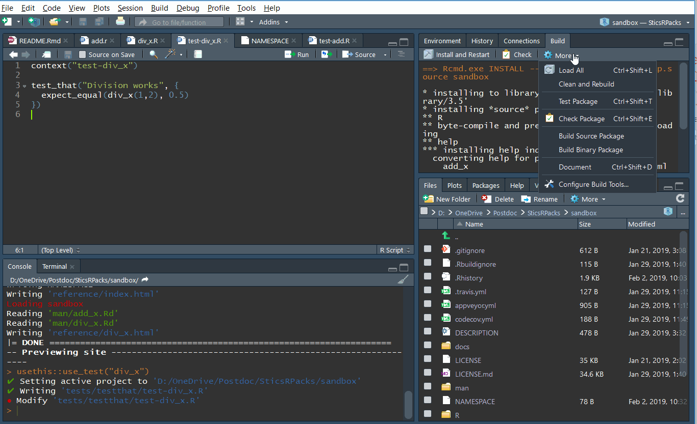
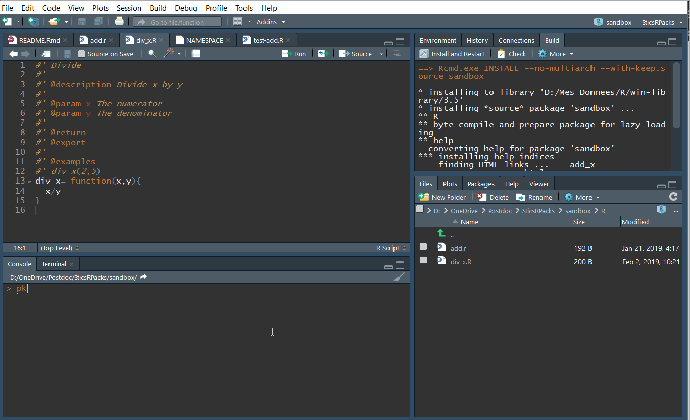

make-a-package.RmdThis tutorial was set up to learn as quickly as possible the basis of R packages development. It is not fully comprehensive, but rather points to specific state-of-the-art tools.
Some tools must be installed before starting this tutorial:
Some R packages are also mandatory, and they must be up-to-date:
An R package needs several mandatory files and folders:
DESCRIPTION: this file describes the package (name, authors…)NAMESPACE: this file lists the functionsR folder: the folder that contains all R codeman folder: the folder that contains all the help pages of the package.Rbuildignore: the file that tells R which files are excluded from the package buildAnd some are not mandatory but helpful:
LICENSE: the license under which the project is developed on.README.Rmd: A text file that explains the project to humans using the Rmarkdown format. When knited, this file produces the README.md file that is rendered by Github on the main page. This very page is a README.md page that is rendered by Github, and that was created using a README.Rmd file.README.md: the file rendered by Github in the main page of the repository and that aims at explaining the project objectives..gitignore: the file that tells GIT which files to ignore.Most of these files are automatically generated using specific tools that are described further.
To create the skeleton of a new package, we can use the usethis package:
The function creates an R package with all mandatory files, and open the project in a new RStudio window. To re-open it next time, just double-click on the tutorialPackage.RProj file.
A first step is to fill the DESCRIPTION file. Open it and adapt it to your use. Then, choose a licence to use for your project. If you don’t know which one to use, choosealicense can help you. In general, it is good practice to have a LICENSE file that describes it. To do so, use the commands from usethis. For example to set the LICENSE to GPL-3, execute this command:
The README file is the first file that is read by the users. You should always make one, and present your package here. This README file can be written in Rmarkdown so you can add some R code and some plots.
To do so, use usethis::use_readme_rmd():
This function will create a pre-formatted README.Rmd file. Try to update it a little bit, and then knit it to make the README.md file.
Rmarkdown is a document written in markdown that can integrate some R code. The R code can be displayed to the users, executed, and its output displayed if necessary. In fact this very document is written in Rmarkdown.
If you don’t know how to write a Rmarkdown file, there is a nice cheat sheet by RStudio. In few words, here are some basics synthax used in markdown:
Headings are written using #. The title of rank 1 is written as: # The big title, the second rank is written as ## Rank two title, the third one ### Little title.
Links are written as [word that appear as text](www.the_actual_link.com)

Bold is written using two ** as this: **here is a bold sentence**
Italic is using one *: here is a sentence in italic
A markdown cheat sheet is available here.
A news file is used to track the changes from one version of a package to another. It can be very usefull for users when there are breaking changes (i.e. code that potentially give errors when applied as in a previous version of the package).
Now we can add some code to the project. To do so, use this command:
This function just creates an R script called “div_x”. You can do it manually also if you prefer:
New function
Each function should be in its own separate file. If some functions are highly related, you can group them into the same file though.
Open div_x.R, and add some code, for example this:
This is a simple function that divides x by y.
It is mandatory to add documentation to all functions you create in a package. Fortunately, there is a tool for that too. This tool is called Roxygen2, and uses special formatted code to build documentation.
To add some documentation to your function, place your cursor into the function, click on the magic wand just above your script and choose Insert Roxygen Skeleton, or press ctrl+shift+alt+R. This will create a dummy Roxygen documentation above your function using the arguments of your function.
Add roxygen
Your function should look like this now:
#' Title
#'
#' @param x
#' @param y
#'
#' @return
#' @export
#'
#' @examples
div_x= function(x,y){
x/y
}Fill the documentation, and add some new keywords such as a description:
#' Divide
#'
#' @description Divide x by y
#'
#' @param x The numerator
#' @param y The denominator
#'
#' @return x/y
#' @export
#'
#' @examples
#' div_x(1,2)
div_x= function(x,y){
x/y
}Here are some more details about roxygen2:
A more in-depth introduction here
How to use other packages here, especially the “Imports” part.
All the keywords
And how to use markdown instead of roxygen keywords here
Then re-build your documentation (ctrl+shift+D), and re-build your package (ctrl+shift+B).
Document and build
You should have access to your own function help page:
After writing a new function or modifying one, it is important to test it. This step is mandatory, because some other functions may call this very function you just wrote, and it becomes more and more difficult to know where bugs are located when none of the functions were thoroughly tested. There are two steps to test a function. The first one is to test it by yourself when designing it, and the other one is by adding automatic tests.
When coding a function, you should always test if each line of code in your function is returning the expected result, and if the function returns the correct output after execution.
It is good practice to maintain your R package as light as possible by keeping the data outside of it whenever possible. Creating an independent R project for tests helps you to keep the external data or executables and the created outputs outside of the package project. To do so, you can create a separate Rstudio project where you will test your package: go to File>New Project>New Directory>New Project, type your project name and choose where it will be located on your computer. The project name is usually taken as the R package name followed by “test”, such as SticsOnR_test. This step is not mandatory but strongly advised.
After creating the new project, add a new R script (ctrl+shift+N), load your R package such as:
And test your function by giving different inputs and checking the function outputs.
Manual tests are a good first step to evaluate a function, but developers tend to test their functions once only, and to skip the tests when making a small change. This methodology can make the code break for everybody when something is changed but not tested, which is not desirable.
To avoid these difficulties, it is strongly advised to use automatic tests, also called unit tests. These tests are written once, and executed each time the code of the package is pushed to github.com, or every time the developer needs to. These tests are implemented by using the testthat package. All documentation is available on the package website.
To add unit tests to our example function (or to a set of functions), run this command:
Add tests
If you add tests on your package for the first time, the usethis::use_test() command will create all the infrastructure you need, if not, it will just create a new test script to your tests.
Now a new folder appeared in our project: tests, which contains two things:
A subfolder called testthat that contains all tests scripts you created.
An R script called testthat.R. This script will call all tests in the R scripts located in testthat. Do not mind this script, you will probably never have to modify it.
If you executed the previous command, you should have a unit test script called test-add.R in this directory with the following code:
This test is an example that tests if 2 * 2 is equal to 4. Change the code to the following to test our function:
This code tests that div_x(1,2) returns 0.5. To run the test, go to the Build tab, and choose Test Package, or press ctrl+shift+T. The tests will all be executed, and a report will appear on the Build tab at the end, showing which tests were successfull, and which failed or returned warnings.

You should add different tests for each of your functions, to check if they work correctly, and if they handle errors properly.
More details about unit tests with testthat are given here.
The devtools package that you installed previously adds also the tests that CRAN do on all packages. These tests consists on checking that all mandatory files are present, that functions are well documented, etc… It is very important to check the package regularly for errors so the users can download a functionning package. To start a CRAN check, go to the Build tab, press the More button, and choose Check Package, or simply use ctrl+shift+E. The package will be checked, and a report will be given at the end.
CRAN checks
A website can be automatically generated from the helpfiles of the R package, the vignettes and the README.md file by using the pkgdown package. For example the auto-generated website for the SticsOnR package is available here.
To set up the website, simply execute the following code each time you update the package:

When first called, the function creates a new folder called docs where it puts all the html files for the website.
Go to the next vignette.